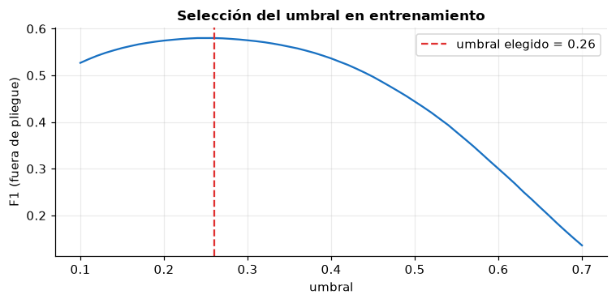
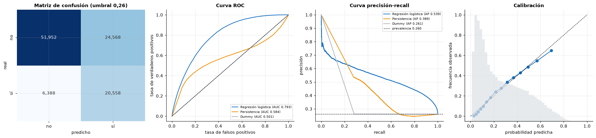
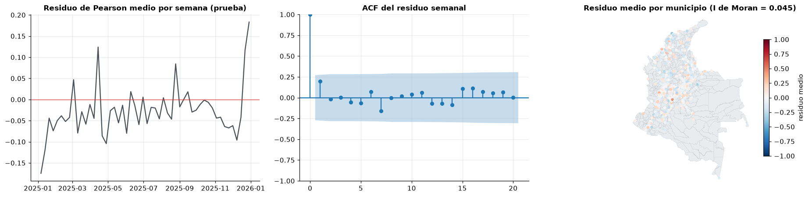
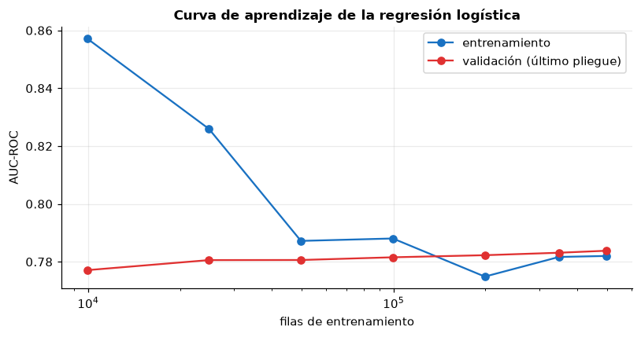
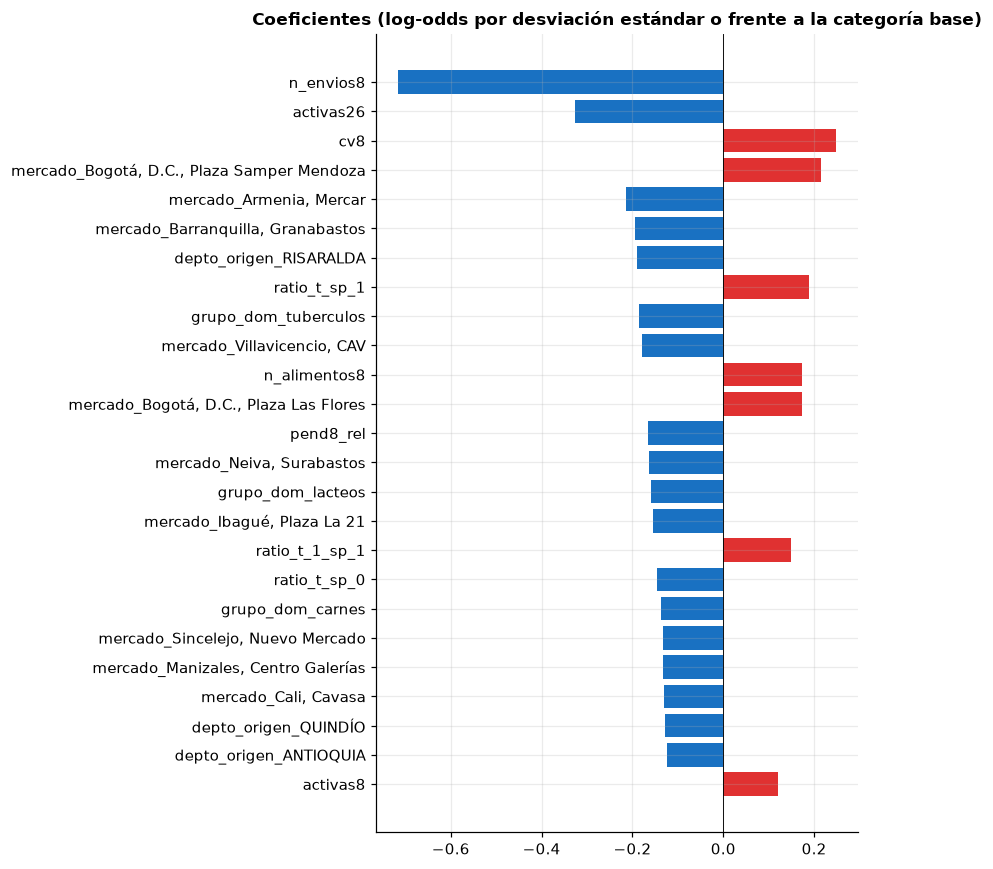
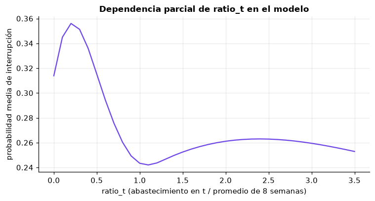

4. Preprocesamiento y modelo base#
Este capítulo cubre la sección 2.9 (preprocesamiento) y la sección 3 (modelo base) del
enunciado: regresión logística dentro de un Pipeline, comparada con líneas base triviales,
validada con bloques temporales y evaluada una sola vez en el conjunto de prueba reservado.
import os
import sys
import time
import warnings
sys.path.insert(0, "../src")
# Los procesos paralelos de joblib necesitan encontrar el módulo utils
os.environ["PYTHONPATH"] = os.path.abspath("../src") + os.pathsep + os.environ.get("PYTHONPATH", "")
warnings.filterwarnings("ignore")
import matplotlib.pyplot as plt
import numpy as np
import pandas as pd
import seaborn as sns
from scipy import stats
from sklearn.calibration import calibration_curve
from sklearn.compose import ColumnTransformer
from sklearn.dummy import DummyClassifier
from sklearn.impute import SimpleImputer
from sklearn.linear_model import LogisticRegression
from sklearn.metrics import (accuracy_score, average_precision_score, brier_score_loss,
confusion_matrix, f1_score, precision_recall_curve, precision_score,
recall_score, roc_auc_score, roc_curve)
from sklearn.model_selection import GridSearchCV, GroupKFold, learning_curve
from sklearn.pipeline import Pipeline
from sklearn.preprocessing import FunctionTransformer, OneHotEncoder, SplineTransformer, StandardScaler
import utils as u
u.estilo()
pd.set_option("display.width", 160)
np.random.seed(u.SEMILLA)
panel = u.cargar_panel()
train, test = u.particion(panel)
del panel
Y = u.VAR_OBJETIVO
y_tr, y_te = train[Y].to_numpy(), test[Y].to_numpy()
print(f"Entrenamiento: {len(train):,} filas; prueba: {len(test):,} filas")
Entrenamiento: 622,244 filas; prueba: 103,466 filas
4.1 Preprocesamiento (sección 2.9)#
Todo el preprocesamiento vive dentro de un Pipeline y se ajusta solo con los datos de
entrenamiento de cada pliegue. Cada decisión remite a un resultado del EDA:
Paso |
Variables |
Decisión |
Resultado del EDA que la motiva |
|---|---|---|---|
Imputación |
todas las numéricas |
mediana de entrenamiento |
Único faltante: |
Transformación log |
|
|
Asimetría de 8,0, 4,0 y 1,7 (2.2) |
Winsorización |
numéricas continuas |
recorte en percentiles 1 y 99 aprendidos en train |
Colas largas y outliers genuinos que no deben eliminarse (1.7.4, 2.2, 2.4) |
Splines cúbicos |
|
5 nodos en cuantiles |
Relación en forma de U con el objetivo (2.3) |
Escalado |
numéricas |
|
Escalas muy distintas; la regularización L2 exige escalas comparables |
Codificación |
|
one-hot; categorías < 1 % agrupadas como «infrecuente» |
6-8 categorías raras por variable (2.2) |
Composición |
|
se omite |
Las participaciones suman 1 (VIF, 2.3) |
Regularización |
todas |
L2 con C elegido por validación temporal |
Correlaciones altas entre tamaño y regularidad (2.3) |
Calendario |
|
incluidas |
Estacionalidad anual y efecto de festivos (2.6) |
Espaciales |
|
incluidas; sin lat/lon crudas |
Heterogeneidad espacial sin memorizar ubicaciones (2.7) |
Excluidas |
|
fuera del modelo |
Auditoría de fuga (2.5) |
LOG = ["n_envios8", "n_alimentos8", "dist_km", "antig_sem"]
SPL = ["ratio_t", "ratio_t_1"]
NUM = [c for c in u.NUMERICAS if c not in LOG + SPL + ["sh_procesados"]]
BIN = u.BINARIAS
CAT = u.CATEGORICAS
X_COLS = LOG + SPL + NUM + BIN + CAT
def preprocesador():
return ColumnTransformer([
("log", Pipeline([("imp", SimpleImputer(strategy="median")),
("log", FunctionTransformer(np.log1p, feature_names_out="one-to-one")),
("win", u.Winsorizador()), ("esc", StandardScaler())]), LOG),
("spl", Pipeline([("imp", SimpleImputer(strategy="median")), ("win", u.Winsorizador()),
("spl", SplineTransformer(n_knots=5, degree=3, knots="quantile")),
("esc", StandardScaler())]), SPL),
("num", Pipeline([("imp", SimpleImputer(strategy="median")), ("win", u.Winsorizador()),
("esc", StandardScaler())]), NUM),
("bin", "passthrough", BIN),
("cat", OneHotEncoder(handle_unknown="infrequent_if_exist", min_frequency=0.01), CAT),
])
modelo = Pipeline([("prep", preprocesador()),
("clf", LogisticRegression(max_iter=3000, random_state=u.SEMILLA))])
modelo
Pipeline(steps=[('prep',
ColumnTransformer(transformers=[('log',
Pipeline(steps=[('imp',
SimpleImputer(strategy='median')),
('log',
FunctionTransformer(feature_names_out='one-to-one',
func=<ufunc 'log1p'>)),
('win',
Winsorizador()),
('esc',
StandardScaler())]),
['n_envios8', 'n_alimentos8',
'dist_km', 'antig_sem']),
('spl',
Pipeline(steps=[('imp',
SimpleImputer(stra...
'festivos_t1', 'sem_sin',
'sem_cos', 'sh_verduras',
'sh_frutas', 'sh_tuberculos',
'sh_granos', 'sh_lacteos',
'sh_carnes',
'sh_pescados']),
('bin', 'passthrough',
['mismo_depto', 'local',
'pdet_origen']),
('cat',
OneHotEncoder(handle_unknown='infrequent_if_exist',
min_frequency=0.01),
['mercado', 'depto_origen',
'grupo_dom'])])),
('clf', LogisticRegression(max_iter=3000, random_state=42))])In a Jupyter environment, please rerun this cell to show the HTML representation or trust the notebook. On GitHub, the HTML representation is unable to render, please try loading this page with nbviewer.org.
Parameters
Parameters
['n_envios8', 'n_alimentos8', 'dist_km', 'antig_sem']
Parameters
Parameters
Parameters
| inferior | 0.01 | |
| superior | 0.99 |
Parameters
['ratio_t', 'ratio_t_1']
Parameters
Parameters
| inferior | 0.01 | |
| superior | 0.99 |
Parameters
Parameters
['log_base8', 'cv8', 'pend8_rel', 'activas8', 'activas26', 'frac_caida_mercado_t', 'frac_caida_nacional_t', 'festivos_t1', 'sem_sin', 'sem_cos', 'sh_verduras', 'sh_frutas', 'sh_tuberculos', 'sh_granos', 'sh_lacteos', 'sh_carnes', 'sh_pescados']
Parameters
Parameters
| inferior | 0.01 | |
| superior | 0.99 |
Parameters
['mismo_depto', 'local', 'pdet_origen']
['mercado', 'depto_origen', 'grupo_dom']
Parameters
Parameters
4.2 Esquema de validación#
Esquema principal (futuro de corredores conocidos). Validación cruzada de ventana
creciente sobre semanas completas (TimeSeriesSplit aplicado a las semanas), con 5 pliegues y un
hueco de 8 semanas entre entrenamiento y validación. Es el mismo tipo de partición que la
separación train/test (cronológica con hueco).
Esquema secundario (territorios nuevos). GroupKFold con el departamento de origen como
grupo: el modelo se evalúa en departamentos que no vio al entrenar.
cv = u.BloquesTemporales(n_splits=5, gap_semanas=8)
for i, (a, b) in enumerate(cv.split(train)):
print(f"Pliegue {i + 1}: train {train['semana_t1'].iloc[a].min().date()} a {train['semana_t1'].iloc[a].max().date()} "
f"({len(a):,}) | validación {train['semana_t1'].iloc[b].min().date()} a {train['semana_t1'].iloc[b].max().date()} ({len(b):,})")
Pliegue 1: train 2018-01-29 a 2019-02-04 (92,057) | validación 2019-04-08 a 2020-05-11 (100,071)
Pliegue 2: train 2018-01-29 a 2020-03-16 (192,880) | validación 2020-05-18 a 2021-06-21 (99,844)
Pliegue 3: train 2018-01-29 a 2021-04-26 (292,964) | validación 2021-06-28 a 2022-08-01 (103,016)
Pliegue 4: train 2018-01-29 a 2022-06-06 (395,088) | validación 2022-08-08 a 2023-09-11 (103,252)
Pliegue 5: train 2018-01-29 a 2023-07-17 (497,700) | validación 2023-09-18 a 2024-10-21 (109,785)
4.3 Ajuste del hiperparámetro de regularización#
Xtr = train[X_COLS + ["semana_t1"]]
Xte = test[X_COLS + ["semana_t1"]]
t0 = time.time()
busqueda = GridSearchCV(modelo, {"clf__C": [0.001, 0.01, 0.1, 1.0, 10.0]}, cv=cv,
scoring={"roc_auc": "roc_auc", "average_precision": "average_precision",
"neg_log_loss": "neg_log_loss"},
refit="roc_auc", n_jobs=-1, return_train_score=True)
busqueda.fit(Xtr, y_tr)
print(f"Tiempo: {time.time() - t0:.0f} s")
res = pd.DataFrame(busqueda.cv_results_)
tabla_c = res[["param_clf__C", "mean_train_roc_auc", "mean_test_roc_auc", "std_test_roc_auc",
"mean_test_average_precision", "mean_test_neg_log_loss"]].rename(columns=lambda c: c.replace("mean_", ""))
tabla_c.round(4)
Tiempo: 53 s
| param_clf__C | train_roc_auc | test_roc_auc | std_test_roc_auc | test_average_precision | test_neg_log_loss | |
|---|---|---|---|---|---|---|
| 0 | 0.001 | 0.7833 | 0.7809 | 0.0026 | 0.5498 | -0.4902 |
| 1 | 0.010 | 0.7836 | 0.7810 | 0.0027 | 0.5492 | -0.4900 |
| 2 | 0.100 | 0.7836 | 0.7809 | 0.0028 | 0.5489 | -0.4900 |
| 3 | 1.000 | 0.7836 | 0.7809 | 0.0028 | 0.5488 | -0.4901 |
| 4 | 10.000 | 0.7836 | 0.7809 | 0.0028 | 0.5488 | -0.4901 |
mejor = busqueda.best_estimator_
C_opt = busqueda.best_params_["clf__C"]
print(f"C elegido: {C_opt}")
por_pliegue = res.loc[busqueda.best_index_, [f"split{i}_test_roc_auc" for i in range(5)]].astype(float)
print("AUC de validación por pliegue:", por_pliegue.round(4).to_list())
C elegido: 0.01
AUC de validación por pliegue: [0.7796, 0.7771, 0.7802, 0.7843, 0.7838]
4.4 Umbral de decisión#
La regresión logística entrega probabilidades. El umbral que convierte probabilidades en alertas se elige con las predicciones fuera de pliegue del entrenamiento (maximizando F1), nunca con el conjunto de prueba.
oof_p, oof_y = [], []
for a, b in cv.split(train):
m = Pipeline([("prep", preprocesador()),
("clf", LogisticRegression(C=C_opt, max_iter=3000, random_state=u.SEMILLA))])
m.fit(Xtr.iloc[a], y_tr[a])
oof_p.append(m.predict_proba(Xtr.iloc[b])[:, 1])
oof_y.append(y_tr[b])
oof_p, oof_y = np.concatenate(oof_p), np.concatenate(oof_y)
umbrales = np.linspace(0.1, 0.7, 61)
f1s = [f1_score(oof_y, oof_p >= t) for t in umbrales]
UMBRAL = float(umbrales[int(np.argmax(f1s))])
fig, ax = plt.subplots(figsize=(7, 3.5))
ax.plot(umbrales, f1s, color="#1971c2")
ax.axvline(UMBRAL, color="#e03131", ls="--", label=f"umbral elegido = {UMBRAL:.2f}")
ax.set_xlabel("umbral")
ax.set_ylabel("F1 (fuera de pliegue)")
ax.set_title("Selección del umbral en entrenamiento")
ax.legend()
plt.tight_layout()
plt.show()
print(f"Umbral que maximiza F1 fuera de pliegue: {UMBRAL:.2f} (F1 = {max(f1s):.3f})")

Umbral que maximiza F1 fuera de pliegue: 0.26 (F1 = 0.580)
4.5 Líneas base triviales#
DummyClassifier(strategy="most_frequent"): siempre predice «sin interrupción».DummyClassifier(strategy="stratified"): predice al azar con la proporción de clases de entrenamiento.Persistencia, la línea base natural en series de tiempo: predice interrupción en t+1 si el corredor ya estaba por debajo del 50 % de su promedio en t (
ratio_t < 0,5); su puntaje para el AUC es-ratio_t.
dummy_mf = DummyClassifier(strategy="most_frequent").fit(Xtr, y_tr)
dummy_st = DummyClassifier(strategy="stratified", random_state=u.SEMILLA).fit(Xtr, y_tr)
p_log = mejor.predict_proba(Xte)[:, 1]
modelos = {
"Dummy (clase mayoritaria)": (dummy_mf.predict_proba(Xte)[:, 1], dummy_mf.predict(Xte)),
"Dummy (estratificado)": (dummy_st.predict_proba(Xte)[:, 1], dummy_st.predict(Xte)),
"Persistencia (ratio_t < 0,5)": (-test["ratio_t"].to_numpy(), (test["ratio_t"] < 0.5).astype(int).to_numpy()),
"Regresión logística (umbral 0,5)": (p_log, (p_log >= 0.5).astype(int)),
f"Regresión logística (umbral {UMBRAL:.2f})".replace(".", ","): (p_log, (p_log >= UMBRAL).astype(int)),
}
4.6 Evaluación en el conjunto de prueba (2025)#
Los intervalos de confianza al 95 % se obtienen con bootstrap por bloques de semana (500 réplicas): se remuestrean semanas completas para respetar la dependencia entre corredores de la misma semana, que el análisis temporal mostró (choques comunes).
sem_te = test["semana_t1"].to_numpy()
metricas = {
"accuracy": lambda y, s, p: accuracy_score(y, p),
"precision": lambda y, s, p: precision_score(y, p, zero_division=0),
"recall": lambda y, s, p: recall_score(y, p),
"F1": lambda y, s, p: f1_score(y, p),
"AUC-ROC": lambda y, s, p: roc_auc_score(y, s),
"AUC-PR": lambda y, s, p: average_precision_score(y, s),
}
filas = []
for nombre, (s, pr) in modelos.items():
fila = {"modelo": nombre}
for mn, f in metricas.items():
fila[mn] = f(y_te, s, pr)
filas.append(fila)
tabla = pd.DataFrame(filas).set_index("modelo")
tabla.round(4)
| accuracy | precision | recall | F1 | AUC-ROC | AUC-PR | |
|---|---|---|---|---|---|---|
| modelo | ||||||
| Dummy (clase mayoritaria) | 0.7396 | 0.0000 | 0.0000 | 0.0000 | 0.5000 | 0.2604 |
| Dummy (estratificado) | 0.6053 | 0.2613 | 0.2820 | 0.2713 | 0.5006 | 0.2607 |
| Persistencia (ratio_t < 0,5) | 0.7252 | 0.4675 | 0.3978 | 0.4298 | 0.5838 | 0.3890 |
| Regresión logística (umbral 0,5) | 0.7661 | 0.5834 | 0.3561 | 0.4422 | 0.7930 | 0.5386 |
| Regresión logística (umbral 0,26) | 0.7008 | 0.4556 | 0.7629 | 0.5705 | 0.7930 | 0.5386 |
def ic(nombre, mn, B=500):
s, pr = modelos[nombre]
f = metricas[mn]
rng = np.random.default_rng(u.SEMILLA)
grupos = pd.Series(np.arange(len(y_te))).groupby(sem_te).apply(np.array).to_list()
vals = []
for _ in range(B):
idx = np.concatenate([grupos[i] for i in rng.integers(0, len(grupos), len(grupos))])
vals.append(f(y_te[idx], s[idx], pr[idx]))
return np.percentile(vals, [2.5, 97.5])
filas = []
for nombre in modelos:
fila = {"modelo": nombre}
for mn in ["accuracy", "F1", "recall", "AUC-ROC", "AUC-PR"]:
lo, hi = ic(nombre, mn)
fila[mn] = f"{tabla.loc[nombre, mn]:.3f} [{lo:.3f}, {hi:.3f}]"
filas.append(fila)
pd.DataFrame(filas).set_index("modelo")
| accuracy | F1 | recall | AUC-ROC | AUC-PR | |
|---|---|---|---|---|---|
| modelo | |||||
| Dummy (clase mayoritaria) | 0.740 [0.733, 0.746] | 0.000 [0.000, 0.000] | 0.000 [0.000, 0.000] | 0.500 [0.500, 0.500] | 0.260 [0.254, 0.267] |
| Dummy (estratificado) | 0.605 [0.601, 0.610] | 0.271 [0.265, 0.277] | 0.282 [0.277, 0.287] | 0.501 [0.497, 0.504] | 0.261 [0.254, 0.268] |
| Persistencia (ratio_t < 0,5) | 0.725 [0.719, 0.730] | 0.430 [0.423, 0.437] | 0.398 [0.387, 0.410] | 0.584 [0.579, 0.589] | 0.389 [0.381, 0.399] |
| Regresión logística (umbral 0,5) | 0.766 [0.761, 0.770] | 0.442 [0.432, 0.453] | 0.356 [0.344, 0.370] | 0.793 [0.789, 0.797] | 0.539 [0.530, 0.549] |
| Regresión logística (umbral 0,26) | 0.701 [0.696, 0.705] | 0.570 [0.564, 0.577] | 0.763 [0.755, 0.771] | 0.793 [0.789, 0.797] | 0.539 [0.530, 0.549] |
nombre_log = f"Regresión logística (umbral {UMBRAL:.2f})".replace(".", ",")
dif = []
rng = np.random.default_rng(u.SEMILLA)
grupos = pd.Series(np.arange(len(y_te))).groupby(sem_te).apply(np.array).to_list()
s_per = modelos["Persistencia (ratio_t < 0,5)"][0]
for _ in range(500):
idx = np.concatenate([grupos[i] for i in rng.integers(0, len(grupos), len(grupos))])
dif.append(roc_auc_score(y_te[idx], p_log[idx]) - roc_auc_score(y_te[idx], s_per[idx]))
lo, hi = np.percentile(dif, [2.5, 97.5])
print(f"Diferencia de AUC (logística − persistencia): {np.mean(dif):.3f}, IC 95 % [{lo:.3f}, {hi:.3f}]")
print(f"Brier score logística: {brier_score_loss(y_te, p_log):.4f}; "
f"Brier de la predicción constante (tasa de train): {brier_score_loss(y_te, np.full(len(y_te), y_tr.mean())):.4f}")
Diferencia de AUC (logística − persistencia): 0.209, IC 95 % [0.203, 0.215]
Brier score logística: 0.1537; Brier de la predicción constante (tasa de train): 0.1931
fig, axes = plt.subplots(1, 4, figsize=(19, 4.5))
cm = confusion_matrix(y_te, (p_log >= UMBRAL).astype(int))
sns.heatmap(cm, annot=True, fmt=",", cmap="Blues", cbar=False, ax=axes[0],
xticklabels=["no", "sí"], yticklabels=["no", "sí"])
axes[0].set_xlabel("predicho")
axes[0].set_ylabel("real")
axes[0].set_title(f"Matriz de confusión (umbral {UMBRAL:.2f})".replace(".", ","))
for nombre, color in [("Regresión logística (umbral 0,5)", "#1971c2"), ("Persistencia (ratio_t < 0,5)", "#f08c00"),
("Dummy (estratificado)", "#adb5bd")]:
s = modelos[nombre][0]
fpr, tpr, _ = roc_curve(y_te, s)
axes[1].plot(fpr, tpr, color=color, label=f"{nombre.split(' (')[0]} (AUC {roc_auc_score(y_te, s):.3f})")
pr_, rc_, _ = precision_recall_curve(y_te, s)
axes[2].plot(rc_, pr_, color=color, label=f"{nombre.split(' (')[0]} (AP {average_precision_score(y_te, s):.3f})")
axes[1].plot([0, 1], [0, 1], "k--", lw=0.8)
axes[1].set_title("Curva ROC")
axes[1].set_xlabel("tasa de falsos positivos")
axes[1].set_ylabel("tasa de verdaderos positivos")
axes[1].legend(fontsize=7)
axes[2].axhline(y_te.mean(), color="k", ls="--", lw=0.8, label=f"prevalencia {y_te.mean():.3f}")
axes[2].set_title("Curva precisión-recall")
axes[2].set_xlabel("recall")
axes[2].set_ylabel("precisión")
axes[2].legend(fontsize=7)
fr, mp = calibration_curve(y_te, p_log, n_bins=15, strategy="quantile")
axes[3].plot(mp, fr, "o-", color="#1971c2", label="logística")
axes[3].plot([0, 1], [0, 1], "k--", lw=0.8)
ax2 = axes[3].twinx()
ax2.hist(p_log, bins=40, color="#dee2e6", alpha=0.7)
ax2.set_yticks([])
ax2.grid(False)
axes[3].set_title("Calibración")
axes[3].set_xlabel("probabilidad predicha")
axes[3].set_ylabel("frecuencia observada")
plt.tight_layout()
plt.show()

Interpretación.
Validación. El AUC de validación temporal es prácticamente igual para todos los valores de C (0,7809-0,7810) y la brecha entre entrenamiento y validación es de apenas 0,003: con 600 mil filas y unas 90 columnas la regularización casi no importa y no hay sobreajuste. El AUC es estable entre pliegues (0,777-0,784), incluido el pliegue que contiene el confinamiento y el paro nacional.
Comparación con la línea base trivial. En la prueba (todo 2025) la regresión logística alcanza AUC-ROC 0,793 [0,789; 0,797] y AUC-PR 0,539 [0,530; 0,549], frente a 0,50 y 0,26 de los Dummy. Supera también a la persistencia (AUC 0,584; diferencia 0,209 con IC 95 % [0,203; 0,215]): saber que un corredor ya cayó esta semana ayuda poco; lo que más informa es su tamaño y su regularidad.
Exactitud. Con umbral 0,5 la exactitud es 0,766, solo 2,6 puntos sobre el 0,740 de predecir siempre «sin interrupción». Esto confirma que la exactitud no es la métrica adecuada con este desbalance.
Umbral. Con el umbral de 0,26 elegido en entrenamiento, el modelo detecta 76 % de las interrupciones (recall 0,763) con una precisión de 0,456 y F1 0,570, frente a 0,43 de la persistencia. De cada 100 alertas, unas 46 son interrupciones reales. Para un sistema de alerta temprana en abastecimiento es preferible este punto (pocas interrupciones sin detectar) a costa de falsas alarmas; el umbral puede ajustarse según el costo relativo de cada error.
Calibración. Las probabilidades están bien calibradas: la curva sigue la diagonal y el Brier (0,154) mejora 20 % sobre la predicción constante (0,193). La leve sobreestimación en el decil más alto (probabilidad 0,70 frente a 0,65 observada) coincide con la menor tasa de interrupción de 2025 (26,0 % frente a 28,2 % en entrenamiento).
Incertidumbre. Los intervalos bootstrap por bloques de semana son estrechos (±0,004 en AUC) gracias al tamaño de la prueba, aunque respetan la dependencia entre corredores de una misma semana.
4.7 Validación por bloques espaciales (territorios no vistos)#
gkf = GroupKFold(n_splits=5)
filas = []
for i, (a, b) in enumerate(gkf.split(Xtr, y_tr, groups=train["depto_origen"])):
m = Pipeline([("prep", preprocesador()),
("clf", LogisticRegression(C=C_opt, max_iter=3000, random_state=u.SEMILLA))])
m.fit(Xtr.iloc[a], y_tr[a])
s = m.predict_proba(Xtr.iloc[b])[:, 1]
filas.append({"pliegue": i + 1, "departamentos": train["depto_origen"].iloc[b].nunique(),
"filas": len(b), "AUC-ROC": roc_auc_score(y_tr[b], s),
"AUC-PR": average_precision_score(y_tr[b], s), "prevalencia": y_tr[b].mean()})
esp = pd.DataFrame(filas).set_index("pliegue")
print(esp.round(4).to_string())
print(f"\nAUC medio por bloques espaciales: {esp['AUC-ROC'].mean():.4f} ± {esp['AUC-ROC'].std():.4f}")
print(f"AUC medio por bloques temporales (C elegido): {por_pliegue.mean():.4f} ± {por_pliegue.std():.4f}")
departamentos filas AUC-ROC AUC-PR prevalencia
pliegue
1 6 124760 0.7746 0.5691 0.3082
2 6 124108 0.7794 0.5396 0.2717
3 6 125037 0.7843 0.5213 0.2526
4 6 124157 0.7947 0.5554 0.2732
5 6 124182 0.7677 0.5545 0.3056
AUC medio por bloques espaciales: 0.7801 ± 0.0102
AUC medio por bloques temporales (C elegido): 0.7810 ± 0.0030
4.8 Diagnóstico de residuos#
En clasificación se usan los residuos de Pearson, \(r_i = (y_i - \hat p_i)/\sqrt{\hat p_i(1-\hat p_i)}\). Si el modelo capturó la estructura, los residuos promedio por semana no deberían estar autocorrelacionados y los residuos promedio por municipio no deberían tener autocorrelación espacial.
from statsmodels.graphics.tsaplots import plot_acf
from statsmodels.stats.diagnostic import acorr_ljungbox
test = test.assign(p=p_log, r=(y_te - p_log) / np.sqrt(p_log * (1 - p_log)))
r_sem = test.groupby("semana_t1")["r"].mean()
lb = acorr_ljungbox(r_sem, lags=[1, 4, 8], return_df=True)
r_mun = test.groupby("cod_mpio").agg(r=("r", "mean"), n=("r", "size"), lat=("lat_o", "first"), lon=("lon_o", "first"))
r_mun = r_mun[r_mun["n"] >= 20]
Wr = u.pesos_knn(r_mun["lat"].values, r_mun["lon"].values, k=8)
Ir, pr_, _ = u.moran_i(r_mun["r"].values, Wr)
y_mun = test.groupby("cod_mpio")[Y].mean().loc[r_mun.index]
Iy, py_, _ = u.moran_i(y_mun.values, Wr)
fig, axes = plt.subplots(1, 3, figsize=(17, 4.2))
axes[0].plot(r_sem.index, r_sem.values, color="#495057")
axes[0].axhline(0, color="#e03131", lw=0.8)
axes[0].set_title("Residuo de Pearson medio por semana (prueba)")
plot_acf(r_sem, lags=20, ax=axes[1], title="ACF del residuo semanal")
u.mapa_base(axes[2])
sc = axes[2].scatter(r_mun["lon"], r_mun["lat"], c=r_mun["r"].clip(-1, 1), cmap="RdBu_r", s=10, vmin=-1, vmax=1)
plt.colorbar(sc, ax=axes[2], shrink=0.7, label="residuo medio")
axes[2].set_title(f"Residuo medio por municipio (I de Moran = {Ir:.3f})")
plt.tight_layout()
plt.show()
print("Ljung-Box sobre el residuo semanal:")
print(lb.round(4).to_string())
print(f"\nI de Moran del residuo municipal: {Ir:.3f} (p = {pr_:.3f}); de la tasa observada en prueba: {Iy:.3f} (p = {py_:.3f})")
print(f"Correlación intra-corredor del residuo con el de la semana previa: "
f"{test.sort_values('semana').groupby(['mercado', 'cod_mpio'])['r'].apply(lambda s: s.autocorr(1)).median():.3f} (mediana)")

Ljung-Box sobre el residuo semanal:
lb_stat lb_pvalue
1 2.1277 0.1447
4 2.3302 0.6753
8 4.4706 0.8124
I de Moran del residuo municipal: 0.045 (p = 0.005); de la tasa observada en prueba: 0.173 (p = 0.001)
Correlación intra-corredor del residuo con el de la semana previa: -0.047 (mediana)
Interpretación.
Esquema espacial. Evaluado en departamentos que no vio, el modelo obtiene AUC 0,780 ± 0,010, casi igual al esquema temporal (0,781 ± 0,003). Generaliza a territorios nuevos porque no usa identificadores ni coordenadas crudas, sino atributos del corredor (tamaño, regularidad, dinámica). La mayor dispersión entre pliegues refleja la heterogeneidad regional (2.7).
Dependencia temporal de los residuos. El residuo medio semanal no está autocorrelacionado (Ljung-Box p = 0,14, 0,68 y 0,81 en los rezagos 1, 4 y 8) y la correlación intra-corredor del residuo con la semana previa es prácticamente nula (mediana −0,05). Los rezagos y ventanas capturaron la dependencia temporal que tenía el objetivo (0,28 en el rezago 1).
Dependencia espacial de los residuos. La autocorrelación espacial baja de I = 0,17 en la tasa observada a I = 0,045 en el residuo, pero sigue siendo significativa (p = 0,005). Queda información espacial sin capturar: probablemente choques locales comunes a municipios vecinos (Knox, 2.8) y diferencias subregionales más finas que el departamento. Variables de vecindad (rezago espacial de las interrupciones recientes) son la extensión natural.
4.9 Curva de aprendizaje#
Se usa el último pliegue temporal como validación y se entrena con fracciones crecientes de la historia previa (desde las semanas más antiguas).
a, b = list(cv.split(train))[-1]
tam, sc_tr, sc_va = learning_curve(
Pipeline([("prep", preprocesador()), ("clf", LogisticRegression(C=C_opt, max_iter=3000, random_state=u.SEMILLA))]),
Xtr, y_tr, cv=[(a, b)], train_sizes=[0.02, 0.05, 0.1, 0.2, 0.4, 0.7, 1.0], scoring="roc_auc",
shuffle=False, n_jobs=-1)
fig, ax = plt.subplots(figsize=(7.5, 4))
ax.plot(tam, sc_tr.mean(1), "o-", label="entrenamiento", color="#1971c2")
ax.plot(tam, sc_va.mean(1), "o-", label="validación (último pliegue)", color="#e03131")
ax.set_xscale("log")
ax.set_xlabel("filas de entrenamiento")
ax.set_ylabel("AUC-ROC")
ax.set_title("Curva de aprendizaje de la regresión logística")
ax.legend()
plt.tight_layout()
plt.show()
pd.DataFrame({"filas": tam, "AUC train": sc_tr.mean(1), "AUC validación": sc_va.mean(1),
"brecha": sc_tr.mean(1) - sc_va.mean(1)}).round(4)

| filas | AUC train | AUC validación | brecha | |
|---|---|---|---|---|
| 0 | 9954 | 0.8571 | 0.7771 | 0.0800 |
| 1 | 24885 | 0.8259 | 0.7806 | 0.0454 |
| 2 | 49770 | 0.7872 | 0.7806 | 0.0066 |
| 3 | 99540 | 0.7880 | 0.7815 | 0.0065 |
| 4 | 199080 | 0.7749 | 0.7823 | -0.0074 |
| 5 | 348390 | 0.7817 | 0.7831 | -0.0015 |
| 6 | 497700 | 0.7820 | 0.7838 | -0.0018 |
4.10 Interpretación de coeficientes#
nombres = mejor.named_steps["prep"].get_feature_names_out()
coef = pd.Series(mejor.named_steps["clf"].coef_[0], index=nombres)
coef.index = coef.index.str.replace(r"^(log|spl|num|bin|cat)__", "", regex=True)
top = coef.reindex(coef.abs().sort_values(ascending=False).index).head(25)
fig, ax = plt.subplots(figsize=(8, 8))
ax.barh(top.index[::-1], top.values[::-1], color=np.where(top.values[::-1] > 0, "#e03131", "#1971c2"))
ax.axvline(0, color="k", lw=0.6)
ax.set_title("Coeficientes (log-odds por desviación estándar o frente a la categoría base)")
plt.tight_layout()
plt.show()
cont = coef[[c for c in coef.index if c in LOG + NUM + BIN]]
pd.DataFrame({"coeficiente": cont, "odds ratio": np.exp(cont)}).sort_values("coeficiente").round(3)

| coeficiente | odds ratio | |
|---|---|---|
| n_envios8 | -0.716 | 0.489 |
| activas26 | -0.327 | 0.721 |
| pend8_rel | -0.166 | 0.847 |
| local | -0.091 | 0.913 |
| log_base8 | -0.072 | 0.930 |
| antig_sem | -0.043 | 0.958 |
| sh_verduras | -0.038 | 0.963 |
| sh_lacteos | -0.033 | 0.968 |
| sh_frutas | -0.023 | 0.978 |
| sh_carnes | -0.015 | 0.985 |
| pdet_origen | -0.012 | 0.989 |
| sh_pescados | -0.008 | 0.992 |
| mismo_depto | 0.008 | 1.008 |
| sh_tuberculos | 0.016 | 1.016 |
| sh_granos | 0.016 | 1.016 |
| sem_cos | 0.019 | 1.019 |
| frac_caida_nacional_t | 0.019 | 1.019 |
| sem_sin | 0.027 | 1.028 |
| frac_caida_mercado_t | 0.041 | 1.042 |
| dist_km | 0.065 | 1.067 |
| festivos_t1 | 0.067 | 1.069 |
| activas8 | 0.120 | 1.128 |
| n_alimentos8 | 0.173 | 1.189 |
| cv8 | 0.248 | 1.282 |
# Efecto de las razones de cambio (splines): probabilidad predicha al variar ratio_t
base = Xtr.sample(3000, random_state=u.SEMILLA).copy()
malla = np.linspace(0, 3.5, 36)
curva = []
for v in malla:
base["ratio_t"] = v
curva.append(mejor.predict_proba(base)[:, 1].mean())
fig, ax = plt.subplots(figsize=(7, 3.8))
ax.plot(malla, curva, color="#7048e8")
ax.set_xlabel("ratio_t (abastecimiento en t / promedio de 8 semanas)")
ax.set_ylabel("probabilidad media de interrupción")
ax.set_title("Dependencia parcial de ratio_t en el modelo")
plt.tight_layout()
plt.show()

Interpretación.
La curva de aprendizaje se estabiliza hacia las 50 mil filas: la brecha entre entrenamiento y validación pasa de 0,08 con 10 mil filas a menos de 0,01 desde 50 mil, y el AUC de validación solo mejora de 0,781 a 0,784 al pasar de 100 mil a 500 mil filas. La muestra es más que suficiente para un modelo lineal; el límite del desempeño es el sesgo del modelo (su forma lineal), no el tamaño de la muestra. Los modelos no lineales de los siguientes entregables tienen margen.
Tamaño y regularidad dominan: una desviación estándar más de cargas semanales (
n_envios8, en log) reduce los odds de interrupción a la mitad (OR 0,49); más semanas activas en el semestre (activas26, OR 0,72) y una tendencia reciente creciente (pend8_rel, OR 0,85) también protegen; la variabilidad (cv8, OR 1,28) la aumenta.Signos que no deben leerse aislados.
n_alimentos8yactivas8tienen coeficiente positivo aunque su relación univariada con el objetivo es negativa. Es un efecto de supresión por colinealidad (correlación 0,91 conn_envios8y 0,83 conactivas26, sección 2.3): a igual número de cargas, más productos distintos significa cargas más pequeñas y diversas. Por eso los coeficientes se leen en bloque.Dinámica reciente. Los splines reproducen la U del EDA: la probabilidad es máxima cuando la semana t ya trajo 10-30 % del promedio (0,36), mínima cerca del nivel habitual (0,24) y sube de nuevo tras un pico (0,26 alrededor de 2,5 veces el promedio).
Contexto. A igualdad de lo demás, los corredores hacia las plazas minoristas de Bogotá (Samper Mendoza, Las Flores) tienen más riesgo y los que llegan a Armenia, Granabastos, Villavicencio o Neiva menos. Los corredores de tubérculos, lácteos y carnes son más estables. La distancia (OR 1,07 por desviación estándar) y los festivos de la semana siguiente (OR 1,07) aumentan ligeramente el riesgo.
PDET. El coeficiente de
pdet_origenes casi nulo (OR 0,99). La mayor tasa bruta de los corredores PDET (33 % frente a 28 %) se explica por sus características: son más pequeños, irregulares y lejanos, y están en departamentos con más interrupciones. Para la tesis esto indica que la fragilidad de estos corredores tiene causas logísticas (escala y regularidad) que una intervención puede atacar (consolidar cargas, acopio, regularidad de despachos).
4.11 Verificaciones de la nota crítica#
El enunciado pide revisar el modelo si la exactitud o el R² superan 80-90 %. Se documentan las verificaciones, aunque el modelo queda por debajo de ese rango.
sin_frac = [c for c in NUM if not c.startswith("frac_caida")]
def prep_sin_frac():
ct = preprocesador()
ct.transformers = [(n, t, [c for c in cols if not c.startswith("frac_caida")]) if n == "num" else (n, t, cols)
for n, t, cols in ct.transformers]
return ct
m_sf = Pipeline([("prep", prep_sin_frac()),
("clf", LogisticRegression(C=C_opt, max_iter=3000, random_state=u.SEMILLA))]).fit(Xtr, y_tr)
auc_sf = roc_auc_score(y_te, m_sf.predict_proba(Xte)[:, 1])
acc_log = tabla.loc[nombre_log, "accuracy"]
acc_dummy = tabla.loc["Dummy (clase mayoritaria)", "accuracy"]
verif = pd.Series({
"Exactitud de la logística (umbral F1)": f"{acc_log:.3f}",
"Exactitud de la logística (umbral 0,5)": f"{tabla.loc['Regresión logística (umbral 0,5)', 'accuracy']:.3f}",
"Exactitud de la clase mayoritaria": f"{acc_dummy:.3f}",
"AUC en prueba / AUC medio en validación temporal": f"{roc_auc_score(y_te, p_log):.3f} / {por_pliegue.mean():.3f}",
"AUC sin las variables en observación frac_caida_*": f"{auc_sf:.3f}",
"AUC univariado máximo entre predictoras admitidas": "0,753 (cv8)",
"Validación respeta el tiempo": "sí: bloques de semanas con hueco de 8; prueba 2025 con hueco de 10",
"Validación por bloques espaciales": f"AUC {esp['AUC-ROC'].mean():.3f}",
})
verif.to_frame("resultado")
| resultado | |
|---|---|
| Exactitud de la logística (umbral F1) | 0.701 |
| Exactitud de la logística (umbral 0,5) | 0.766 |
| Exactitud de la clase mayoritaria | 0.740 |
| AUC en prueba / AUC medio en validación temporal | 0.793 / 0.781 |
| AUC sin las variables en observación frac_caida_* | 0.793 |
| AUC univariado máximo entre predictoras admitidas | 0,753 (cv8) |
| Validación respeta el tiempo | sí: bloques de semanas con hueco de 8; prueba ... |
| Validación por bloques espaciales | AUC 0.780 |
Conclusión de la nota crítica. La exactitud (0,70-0,77) está por debajo del rango de alerta y
apenas supera la de la clase mayoritaria (0,74), por lo que se reportan métricas insensibles al
desbalance. Aun así se verificó todo lo que pide la nota: no hay fuga (ninguna predictora admitida
supera AUC univariado 0,76; las variables construidas con t+1 están excluidas; quitar las
variables en observación frac_caida_* deja el AUC en 0,793), la validación respeta el tiempo con
huecos y se evaluó aparte con bloques espaciales, el AUC de prueba (0,793) es coherente con el de
validación (0,781) y los residuos no muestran dependencia temporal. El problema no es trivial: con
información de la semana actual, un modelo lineal ordena bien el riesgo (AUC 0,79) pero su precisión
en la clase positiva es moderada, lo que deja espacio para los modelos del resto del curso
(k-NN, Random Forest, XGBoost, SVM no lineal) y para variables de vecindad espacial.